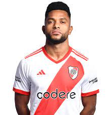
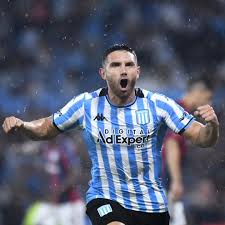

Goleadores:
- Miguel Borja (River Plate) - 13 Goles
- Adrian Martínez (Racing Club) - 12 Goles
- Juan Ignacio Ramirez (Newell´s Old Boys) - 8 Goles
- Edinson Cavani (Boca Juniors) - 7 Goles
- Alan Lescano (Argentinos Jrs) - 6 Goles
- Damian Puebla (Instituto) - 6 Goles
- Adam Bareiro (San Lorenzo) - 6 Goles
- Facundo Colidio (River Plate) - 6 Goles
- Federico Girotti (Talleres (C)) - 6 Goles
- Lucas Passerini (Belgrano) - 6 Goles
Mejor Goleador
Miguel Angel Borja
River Plate
Segundo Goleador
Adrian Martínez
Racing Club
Tercer Goleador
Juan Ignacio Ramirez

Newell´s Old Boys